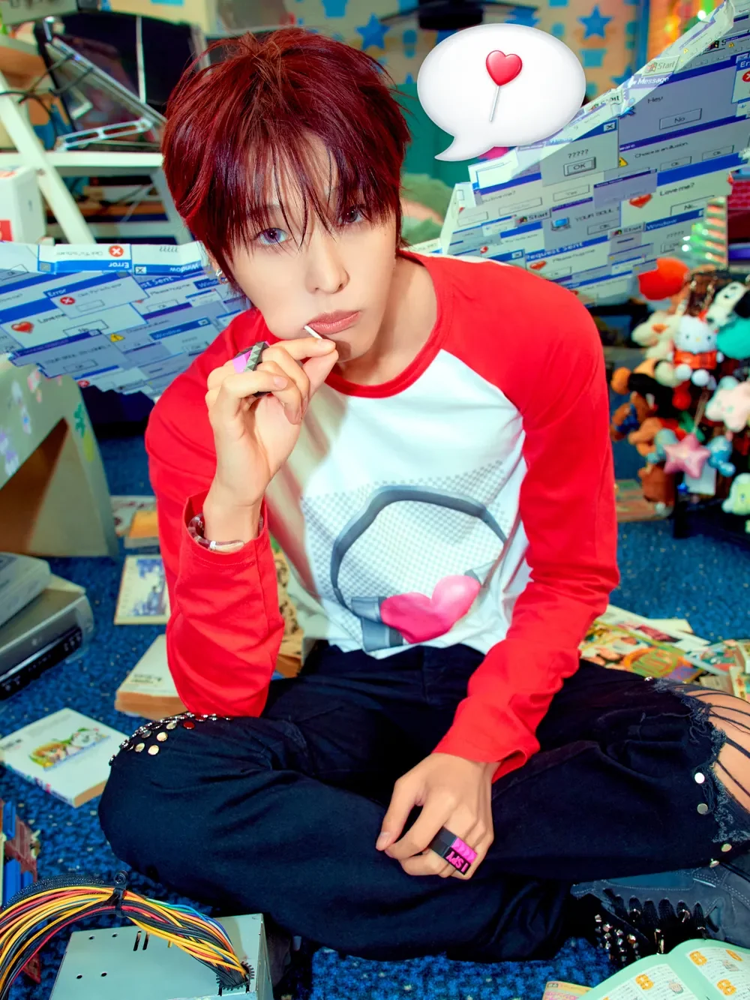
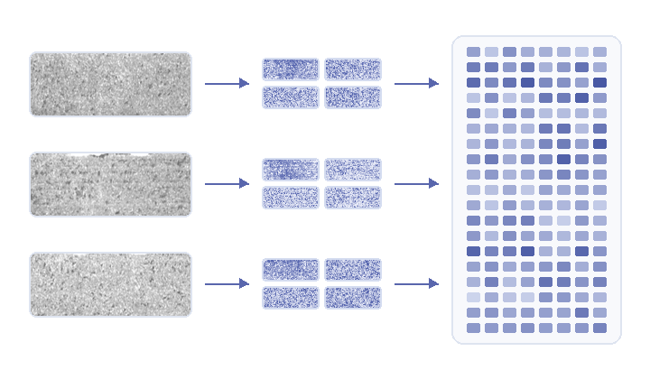
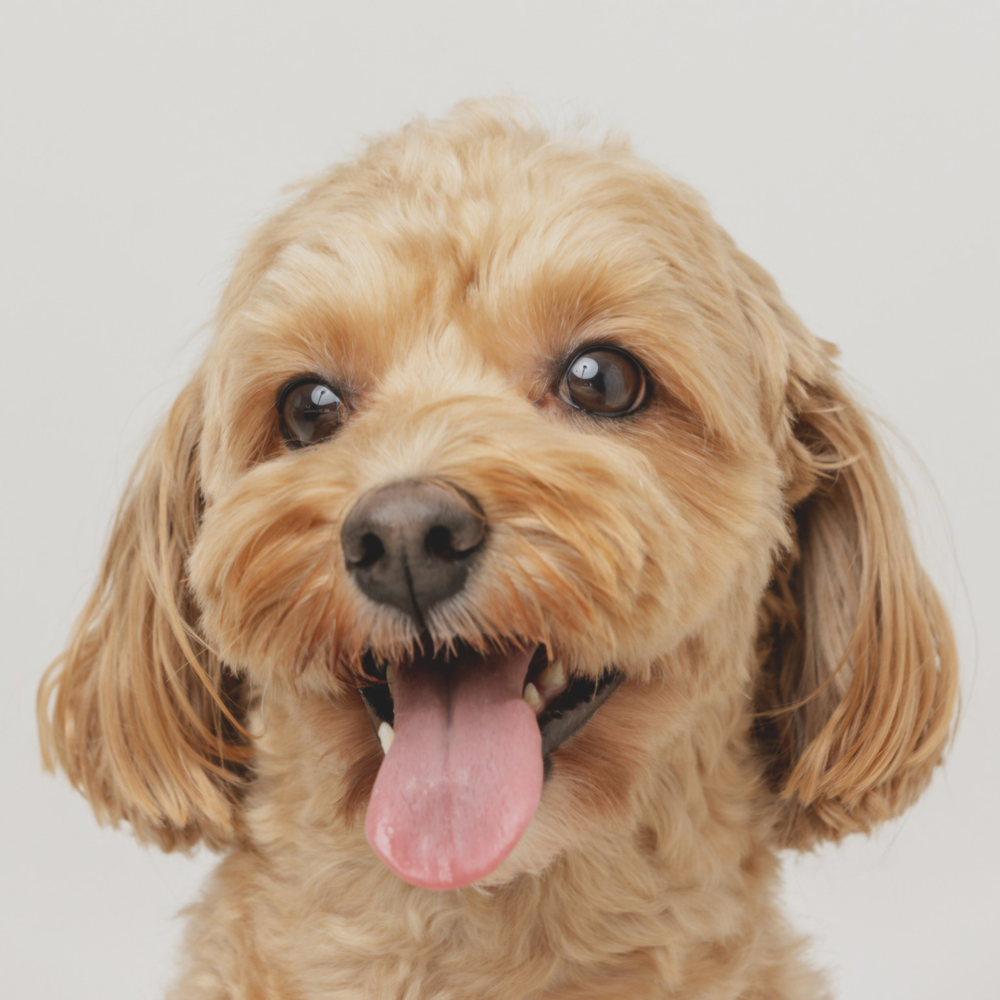

01 / PERCEPTION
See the signal.
How can models find meaningful patterns in images and video, even when the world gets messy?
VISUAL REPRESENTATIONNew ways of seeing.
New worlds to explore.

OUR NAME,
OUR POINT OF VIEW.
RIKU stands for Research in Imaging, Knowledge & Understanding. We begin with computer vision, then bring different perspectives together to explore questions that cross disciplines.
WISH TO
SEE MORE.
We read visual information, connect it with context, and explore where it can make a difference. These are the directions we are curious about.
How can models find meaningful patterns in images and video, even when the world gets messy?
VISUAL REPRESENTATIONWhat can vision, language, and context teach one another when they meet?
MULTIMODAL UNDERSTANDINGWhere can visual understanding help people solve real problems across fields?
CROSS-DOMAIN VISIONWe build visual tools that make the next question easier to see. Meet our first featured project.
See where to look.
A metal surface inspection demo that compares real photos with a normal reference and highlights areas worth reviewing. Follow the six-step method on the screen.
EXPLORE SURFACETRACE
Normal photos form a reference bank.
IMAGERY CREDIT / SurfaceTrace animations derived from KolektorSDD · ViCoS Lab / Kolektor Group photos and model intermediates. See Tabernik et al. (2019). Dataset-derived media: CC BY-NC-SA 4.0.
What do visual representations capture—and what do they miss?
OPEN QUESTION ✳What changes when images, language, and domain knowledge come together?
OPEN QUESTION ✦What would it take to make vision useful in the real world?
OPEN QUESTION ♡Different perspectives help us see further.

Three views into MRI-based prediction of perineural invasion, from anatomy-guided learning to efficient routing and ordered slices.
RIKU team members are underlined in blue.
An anatomy-guided teacher helps an MRI-only student learn to predict perineural invasion without masks at inference.
Adaptive routing across attention, spatial tokens, and MLP width makes diffusion Transformer-based MRI prediction more efficient.
Ordered 2.5D MRI slabs and multiple instance learning support patient-level risk assessment from weak labels.
Our name takes inspiration from Maeda Riku of NCT WISH. We carry some of that bright, playful energy into how we work: finding good questions and shaping answers together.
Our wish is to keep our perspective moving. When ideas from different fields meet, they can open possibilities none of us expected.
피하지 못한다면은 즐겨 face it
If we can't avoid it, enjoy it. Face it.
A reminder to meet difficult questions with curiosity and energy.